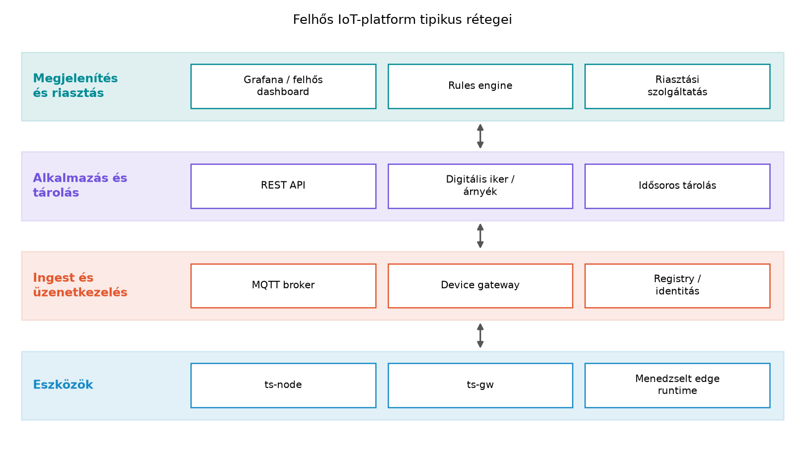

A könyv eddigi laborjaiban a TerraSense rendszert saját
komponensekből építettük fel: ts-node a Zephyr-alapú
szenzorcsomópont, ts-gw a C++-os gateway,
ts-backend a Spring Boot szolgáltatás, Mosquitto a broker,
TimescaleDB a tárolás, Grafana a megjelenítés. Ez a rétegzett
architektúra jól működik akkor, ha a csapatnak van low-level, backend-
és üzemeltetési kapacitása, és ha a cél a teljes kontroll, a
testreszabhatóság vagy egy tanulási folyamat.
A valós ipari döntés azonban gyakran nem az, hogy tudunk-e ilyen rendszert építeni, hanem az, hogy érdemes-e fenntartani. Egy termék méretnövekedésével a flottakezelés, az OTA, a tanúsítvány-kezelés, a biztonsági monitorozás és a megfelelőség (például ETSI EN 303 645, EU Cyber Resilience Act) olyan költségeket generál, amelyeket egy platformszolgáltató méretgazdaságosan tud biztosítani. Ebben az alfejezetben a TerraSense saját komponenseit megfeleltetjük a felhős és nyílt forrású platformok tipikus szolgáltatásainak, majd egy döntési mátrixszal és költségbecsléssel segítjük a build vs. buy választást.
A nagy felhőszolgáltatók (például az AWS IoT Core, az Azure IoT Hub vagy a Google Cloud IoT) a TerraSense-hez hasonló architektúrákat kínálnak menedzselt szolgáltatásként. A tipikus komponensek az alábbiak; a konkrét szolgáltatásnevek gyorsan változhatnak, ezért minden platform esetén ellenőrizendők a dokumentációban.

A fenti ábra azt mutatja, hogy a felhős platformok ugyanazokat a rétegeket fedik le, mint a TerraSense saját összeállítása:
devices táblájának és a flottakezelésnek a felhős
megfelelője.device_config JSONB árnyék
mezőivel, amelyet a Flottakezelés: nyilvántartás,
konfiguráció, állapot alfejezetben vezettünk be.ts-gw szerepét veheti
át, sok esetben konténeralapú.Definíció. Menedzselt IoT-platform alatt olyan felhőszolgáltatást értünk, amely az eszközök csatlakoztatását, hitelesítését, üzenetkezelését, állapotkezelését és gyakran a feldolgozást is szolgáltatásként biztosítja. A fogyasztó általában az eszközök és az alkalmazáslogika szintjén dolgozik, az infrastruktúra üzemeltetését a szolgáltató vállalja.
A felhős platformok előnye a gyors indulás, a skálázhatóság és az, hogy a biztonsági alapszolgáltatásokat (például mTLS-végpont, tanúsítvány-visszavonás, hitelesítő adat-generálás) a szolgáltató karbantartja. A hátrány a szolgáltatói kötődés és a költség, amely nagy üzenetszámnál jelentős lehet.
A nyílt forrású alternatívák a felhős platformokhoz hasonló funkcionalitást kínálnak, de a kód és az üzemeltetés a saját infrastruktúrába kerül. A leggyakrabban említett rendszerek:
ts-backend +
TimescaleDB kombinációjának nyílt forrású felbontása lehet.ts-backend az ingestet és a REST API-t, a TimescaleDB
a tárolást. A flottakezelést és az OTA-t pedig az Eszközmenedzsment: provisioning, OTA, flotta és a
Flottakezelés: nyilvántartás, konfiguráció,
állapot alfejezetekben leírt mintákra építjük.A nyílt forrású platformok közös jellemzője, hogy a kód elérhető és auditálható, a rendszer a saját Kubernetes- vagy Docker-infrastruktúránkon futhat, és nincs szolgáltatói kötődés. Ugyanakkor az üzemeltetés, a méretezés és a biztonsági frissítések a saját csapat terhét növelik.
A következő táblázat a saját építésű rendszer (TerraSense), a nyílt forrású platform és a menedzselt felhős platform fő szempontjait foglalja össze.
| Szempont | Saját építés (TerraSense) | Nyílt forrású (ThingsBoard, Hono/Ditto) | Menedzselt felhős |
|---|---|---|---|
| Induló költség | alacsony, de nagy mérnöki ráfordítás | közepes (telepítés, konfigurálás) | alacsony (konzol, SDK) |
| Működési költség | alacsony – saját infra | közepes – saját infra üzemeltetése | magas – használatarányos, de kiszámítható |
| Kontroll és testreszabás | teljes | jó – a kód módosítható | korlátozott – a szolgáltatás adottságai |
| Szolgáltatói kötődés | nincs | nincs, de a platform fejlődését követni kell | erős – a szolgáltató API-hoz köt |
| Skálázhatóság | saját felelősség | saját felelősség | a szolgáltató biztosítja |
| Biztonság | saját felelősség (mTLS, X.509, OTA) | saját felelősség, de auditálható kód | részben menedzselt, de a felelősségi határok tisztázandók |
| Fejlesztési idő | hosszú – minden komponenst meg kell írni | közepes – a keretrendszer gyorsít | rövid – SDK-val és konzollal |
| Lock-in kockázat | nincs | alacsony | magas, de szabványos protokollokkal csökkenthető |
A döntési mátrix alapján a TerraSense-edzőrendszerben a saját építés elsősorban akkor indokolt, ha a tanulási cél, a teljes kontroll vagy az egyedi követelmények (például speciális rádióprotokoll, zárt telephelyi működés) elsődlegesek. A menedzselt felhős platform akkor racionális, ha a flotta mérete nagy, a csapat nem akar infrastruktúrát üzemeltetni, és a termék gyors piacra vitele a cél. A nyílt forrású platform jó kompromisszum, ha a szolgáltatói kötődés kizárt, de a teljes backend fejlesztését el szeretnénk kerülni.
A szolgáltatói kötődés (vendor lock-in) azt jelenti, hogy a rendszer a választott platform szolgáltatásaihoz, API-jaihoz és adatmodelljéhez kötődik, és a másik szolgáltatóra váltás jelentős fejlesztést igényel.
A TerraSense rendszerben az MQTT, a topic-konvenció
(terrasense/<site>/<node>/telemetry stb.), a
JSON-alapú telemetria-séma és az X.509-tanúsítványok mind szabványos
vagy nyílt elemek. Ezért a TerraSense saját backendje cserélhető egy
másik MQTT-kompatibilis platformra anélkül, hogy az eszközökön nagy
változtatást kellene végezni. Ez a hordozhatóság egyik kulcsa.
A menedzselt platformok gyakran kínálnak saját SDK-t, topic-struktúrát vagy auth-flow-t. Ha ezeket az eszközbe égetjük, a váltás költséges. A jó gyakorlat az, hogy az eszköz csak szabványos protokollokat (MQTT, CoAP, TLS, CBOR/JSON) használjon, a platform-specifikus SDK-t pedig csak az edge-en vagy a backend oldalán alkalmazzuk. Így a szolgáltatóváltás a broker-végpont és a hitelesítési konfiguráció cseréjére korlátozódik.
A költségmodell illusztrálásához készítsünk egy feltételezett becslést egy 1000 eszközös TerraSense flottára. Az eszközök óránként 1 telemetria-üzenetet küldenek, tehát havonta:
Tegyük fel, hogy minden üzenet mérete 200 B, tehát a havi forgalom:
A menedzselt felhős platformoknál a díj rendszerint az üzenetek száma, a feldolgozott byte-ok és az extra szolgáltatások (például OTA, tanúsítványtárolás) alapján képződik. Feltételezett árakkal (ezek nem ellenőrzött aktuális listaárak, csak a modell szemléltetésére szolgálnak):
Ekkor a havi költség:
Havi összesen körülbelül 51 USD, évente körülbelül 612 USD. Ez egy kis flottánál alacsony. Amikor azonban az eszközök 1 percenként küldenek, vagy az adatmennyiség nagy (képek, gyakori OTA), a menedzselt költség gyorsan nőhet, és a saját broker + TimescaleDB üzemeltetése versenyképesebb lehet, különösen, ha a cég már rendelkezik saját Kubernetes-kapacitással.
A fenti számpélda illusztratív, az árak feltételezettek. A tényleges döntéshez a szolgáltatók aktuális díjszabását és a pontos üzenetszámot kell használni.
A Matter (korábban Project CHIP) az okosotthon-eszközök interoperabilitását célzó, a Connectivity Standards Alliance (CSA) által gondozott szabvány. Célja, hogy egy eszköz egyszer működjön a nagy okosotthon-ökoszisztémákkal (például Apple HomeKit, Google Home, Amazon Alexa), anélkül, hogy mindegyikhez külön kellene integrálni.
A Matter a szállítási réteget (IPv6, TCP/UDP, BLE a provisioninghez), a biztonságot (X.509-tanúsítványok, nyílt kulcsú infrastruktúra a beüzemeléshez) és az alkalmazási réteget (eszköztípusok, parancsok, attribútumok) is szabványosítja. A TerraSense ipari-mezőgazdasági környezetében a Matter nem közvetlenül előírás, de a tanulsága fontos: a szabványos adatmodell és a közös provisioning-folyamat csökkenti az integrációs költséget, és növeli a hordozhatóságot.
Ha a TerraSense-t később okosotthon-ökoszisztémába kellene
integrálni, akkor a ts-gw vagy a ts-backend
rétegben egy Matter bridge-t kellene implementálni, amely a
terrasense/... topicokat átfordítja a Matter eszköztípusok
attribútumaivá. Ez a fordítás a message translator EIP-mintára vezethető
vissza, amelyet a Enterprise integrációs minták
IoT-ban alfejezetben alkalmaztunk.
A build vs. buy döntés során a leggyakoribb objektív hibák az alábbiak:
| Tünet | Ok | Javítás |
|---|---|---|
| A menedzselt platform első becslésben olcsó, de a számla váratlanul magas | Az árazás üzenetenként, byte-onként vagy szolgáltatásonként összetett; a tesztforgalom is számlázott | Készítsünk üzenetszám- és méretmodellt, használjunk alertet a havi keretre |
| A nyílt forrású platform telepítése után a frissítések elmaradnak | A csapat a telepítést üzemeltetésnek tekinti, de a frissítést nem ütemezi | A compose/Kubernetes verziókat foglaljuk be a CI/CD futamokba, a frissítést automatizáljuk |
| Az eszköz SDK-ját a platformra szabjuk, és a váltás lehetetlen | A platform-specifikus API-kat az eszköz firmware-jébe linkeljük | Az eszköz csak MQTT/CoAP és JSON/CBOR szinten kommunikáljon; a platform-SDK az edge-en vagy a backendben legyen |
| A saját rendszer biztonsági frissítései hónapokig csúsznak | A komponensek (Mosquitto, Zephyr, Spring Boot) verziókövetése nincs automatizálva | Használjunk konténer- és firmware-képek alapján SBOM-ot és automatizált CVE-ellenőrzést |
~/iot-labor/i065/decision.md
fájlban, amelyben a TerraSense flottára (1000 eszköz, óránkénti
telemetria) a saját, a nyílt forrású és a menedzselt opciót értékeli. A
dokumentum tartalmazzon egy szemponttáblázatot, a költségbecslést és egy
ajánlást.ts-backend kódját, és azonosítsa, mely
komponenseket lehetne kiváltani menedzselt szolgáltatásokkal. Írja le,
melyik cseréhez milyen interface-változtatás kellene ahhoz, hogy az
eszköz és a gateway kódjához ne kelljen hozzányúlni.Mert az MQTT csak a szállítási protokoll. A hordozhatósághoz szükséges a topic-konvenció, a payload-séma (JSON/CBOR), az eszközazonosítás (például node_id), a hitelesítési mechanizmus (X.509, JWT), a szekvencia- és időbélyegkezelés, valamint az árnyék/desired-reported szemantika is. Ha ezek közül bármelyik platform-specifikus, a váltás költséges lesz.
A 200 eszköz 5 másodpercenként küld, tehát percenként 12 üzenetet, óránként 720-at, naponta 17 280-at, havonta 518 400 üzenetet eszközönként. 200 eszközre ez 103 680 000 üzenet. A maradék 800 eszköz óránként küld, ami 800 × 24 × 30 = 576 000 üzenet. Összesen 104 256 000 üzenet. Az MQTT-díj: , szemben a korábbi 0,72 USD-vel. Ez több mint százszoros növekedés.
A decision.md például így épülhet fel:
# TerraSense build vs. buy – 1000 eszköz
## Szempontok
| Szempont | Saját | Nyílt forrású | Menedzselt |
## Költség
- Feltételezett menedzselt költség: ~51 USD/hó (óraüzenetekkel)
- Saját infra: 1 db virtuális gép + TimescaleDB tárhely, becsült ~40 USD/hó
(feltételezett; a valós díj a szolgáltatótól függ)
## Ajánlás
Kis flottánál a menedzselt platform gyors indulást ad. A tanulórendszer
esetén a saját építés marad a kontroll és a tanulási cél miatt. Nagy
adatmenetnél a saját infra versenyképes lehet.ts-backend MQTT-ingestje cserélhető menedzselt device
gatewayre, ha a bejövő topicok és payload változatlanok. A TimescaleDB
cserélhető menedzselt idősoros adatbázisra, ha a schema és a
lekérdezések kompatibilisek. A flottakezelés (devices,
device_config) cserélhető felhős registry-re, ha az
eszközazonosító- és árnyék-modell megegyezik. A legfontosabb interface:
az MQTT-topic-szerződés és a JSON-séma, ezért ezeket explicit,
verziózott szerződésként kell kezelni.Az alfejezet a TerraSense saját komponenseit a felhős és nyílt
forrású IoT-platformok tipikus szolgáltatásaival feleltette meg. A
felhős platformok device gatewayt, registryt, shadower, rules enginet,
idősoros tárolást és OTA-menedzsmentet kínálnak; ezek rendre a
TerraSense Mosquitto, devices tábla,
device_config árnyék, riasztási szabályok, TimescaleDB és
saját OTA-folyamatainak felelnek meg. A nyílt forrású alternatívák
(ThingsBoard, Eclipse Hono/Ditto) a saját építés és a menedzselt
szolgáltatás közötti kompromisszumot kínálnak. A döntéshez a költség, a
kontroll, a kötődés és a skálázhatóság mátrixát kell használni.
Továbbvitt eredmény: a felhős komponensek
megfeleltetési táblázata és a build vs. buy mátrix a Záróprojekt: a teljes TerraSense rendszer összeállítása
és átvétele alfejezet döntési dokumentumában, valamint a Összefoglalás: döntési térkép, ellenőrzőlista,
továbbtanulás összefoglalójában közvetlenül felhasználandó.